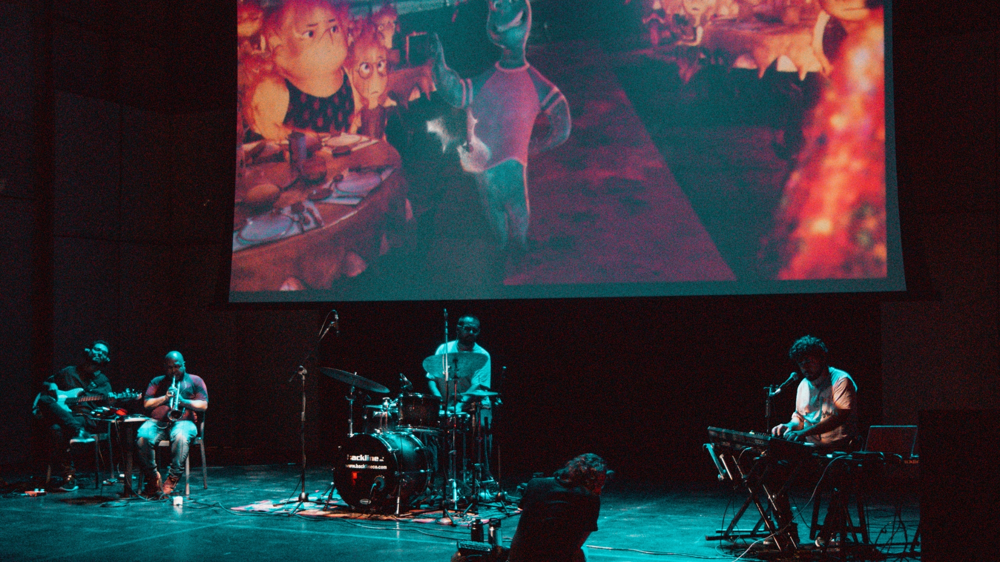
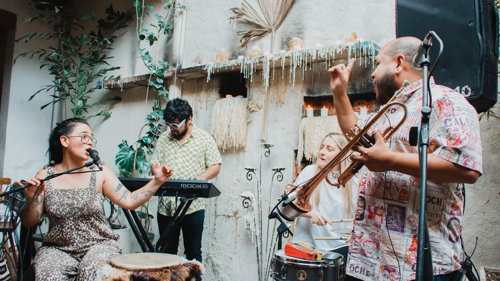
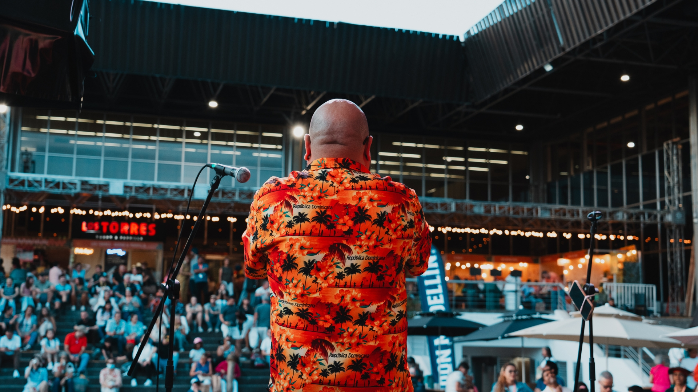
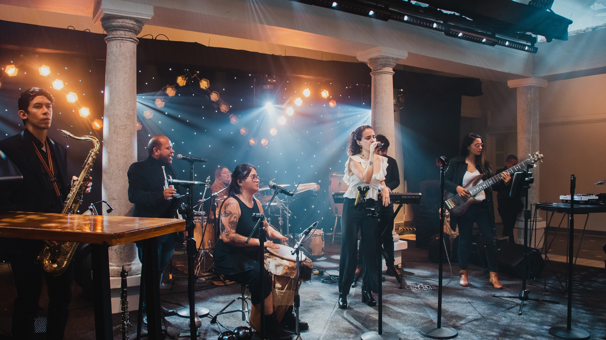
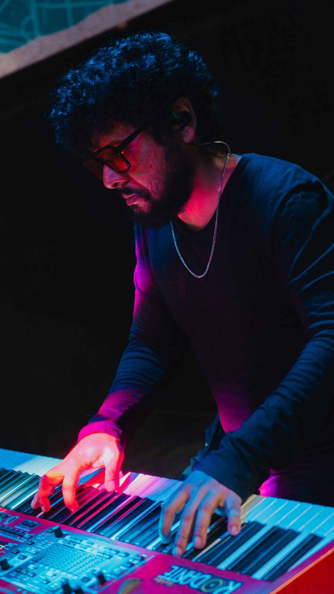
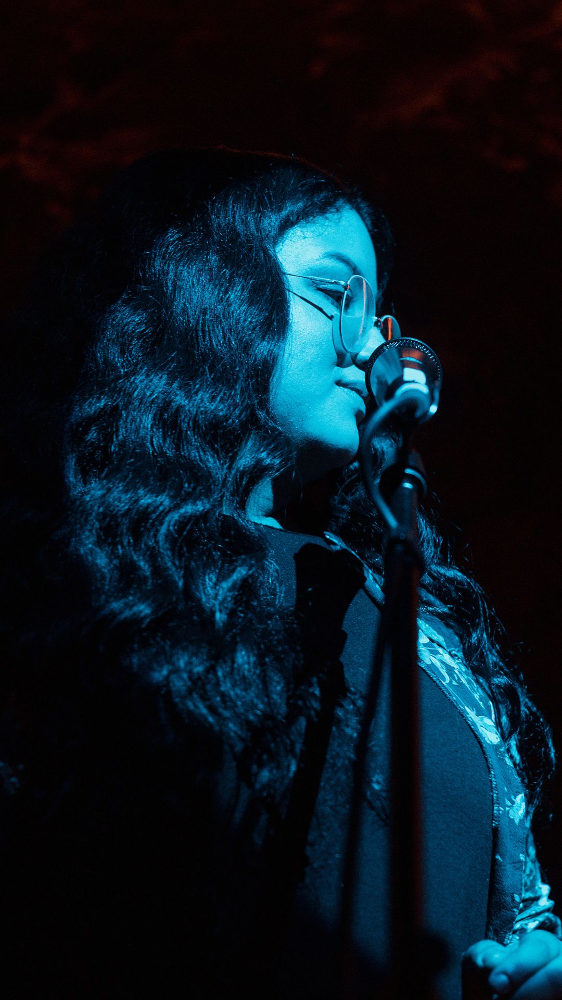
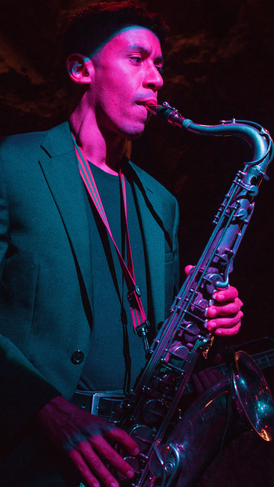
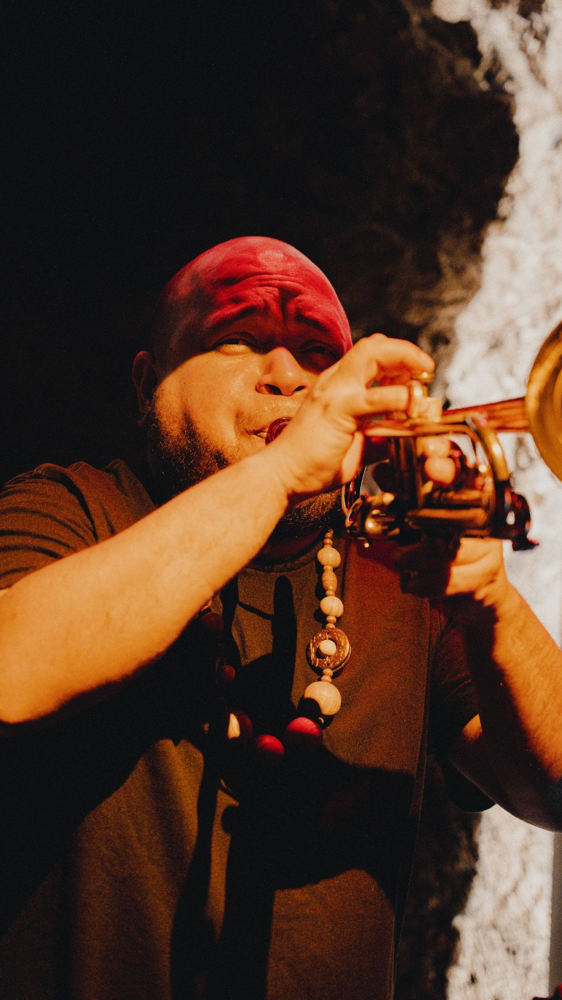

Boutique de Diseño Sonoro · Medellín
Traducimos marcas, espacios y momentos al lenguaje de la música en vivo.
Cada show garantiza un alto estándar musical y un registro audiovisual para la difusión de tu evento. Música en vivo profesional para eventos corporativos, hoteles, restaurantes y bodas en Medellín.
Ecosistema de servicios
Cada uno responde a diferentes categorías de servicio. Selecciona el que más se adecúe a tu tipo de evento.
Maridaje sonoro inmersivo entre gastronomía, historia y música en vivo.

Live Scoring en vivo de películas icónicas, con derechos de exhibición incluidos.

Small Big Band + marionetas. El villancico clásico transformado en espectáculo internacional.
Ver detalle →
Música en vivo de altísima calidad llevada exactamente donde está tu cliente.
Ver detalle →
Música en vivo para cada momento — ceremonia, coctel y celebración.

Talleres experienciales con música en vivo para fortalecer equipos de trabajo.
Ver detalle →Experiencia inmersiva donde la gastronomía, la coctelería y la historia dialogan con la música en vivo. Los clientes HORECA se asocian con Músicos de Fondo para crear eventos de destino dentro de su local en Medellín. Ofrecemos tres niveles: The Jazz Route (cena maridaje 6 tiempos con narrativa histórica guiada), Noches de Inmersión (eventos bimensuales temáticos como Havana Night o Prohibition Era) y Residencias Sonoras (dúos o tríos bajo suscripción mensual para la identidad sonora del venue). Incluye producción técnica llave en mano y registro audiovisual con 1 Reel y 5 fotos HD por evento.
Live Scoring en vivo de obras cinematográficas icónicas. Reinterpretamos bandas sonoras sincronizando música en vivo con la proyección. Gestión de derechos de exhibición EGEDA y MPLC incluida. Repertorio: Animación y Fantasía (El Viaje de Chihiro, WALL-E), Estética y Culto (El Gran Hotel Budapest), Era Dorada (Tiempos Modernos). Formato septeto o Small Big Band. Sin competencia directa en Colombia.
Show inmersivo navideño que transforma el villancico clásico en un espectáculo con Small Big Band de 8 músicos y marionetas de gran formato. Dos niveles: El Cuento de Invierno (show familiar 45-60 min) y Holiday Swing Gala (gala de etiqueta con Swing y Mambo). Ideal para centros comerciales, eventos corporativos y teatros.
Música en vivo de altísima calidad llevada exactamente donde está el cliente. Solistas, dúos o tríos que dinamizan espacios comerciales en Medellín. 100% acústico o con amplificación portátil invisible. Sin tarimas, sin cables, sin bloqueos de pasillos. Tres formatos: Conciertos Itinerantes (solistas móviles), Puntos Acústicos (dúos fijos en plazoletas) y Activaciones de Marca (música a la medida con vestuario alineado a la marca).
Música en vivo diseñada para cada momento de tu boda. Live Scoring reactivo para votos, musicalización de proyecciones sorpresa y producción técnica invisible. Niveles: El Ritual Cinematográfico (Live Scoring ceremonial), El Viaje Sonoro (ceremonia más Sunset Cocktail con Swing y Latin Jazz) y La Obra Maestra (composición exclusiva de la canción de la pareja).
Talleres experienciales que usan principios de la música en vivo (improvisación, escucha activa, ensamble) para fortalecer equipos de trabajo. Dos modalidades: Lab de Identidad Sonora (el equipo compone el himno de la empresa con la banda) y Talleres de Composición para liberación creativa. Facturable bajo Capacitación y SST. De 60 a 120 minutos, adaptable.
Performance literario-musical inmersivo de 60 minutos con el escritor y periodista Diego Londoño (El Fan Fatal). Diego lee sus cuentos inéditos — relatos nacidos de fotografías tomadas en aeropuertos, aceras, hospitales y calles de paso — mientras un cuarteto de músicos compone la banda sonora en tiempo real y sus fotografías originales se proyectan como universo visual. Tres lenguajes en una sola experiencia: palabra, música e imagen. Nada está pregrabado. Incluye ensamble de 4 músicos + narrador-autor, diseño sonoro, dramaturgia musical, curaduría literaria y proyección fotográfica. Para librerías, ferias del libro, festivales literarios, centros culturales, universidades, teatros y programación municipal. Diego Londoño es autor de siete libros con Penguin Random House y Planeta, entre ellos la biografía oficial de Juanes y Brutal Honestidad — las vidas de Andrés Calamaro.
En cámara
Tres registros de nuestro ensamble — para que la propuesta sonora hable por sí misma.
La promesa
Hecho a la medida — donde tú decides el género, el formato y el nivel de protagonismo.
Partimos del Jazz y lo fusionamos con Latin, Son Cubano, Funk, Blues y Pop. Operamos desde solistas íntimos hasta Small Big Bands. Entregamos un registro audiovisual para la difusión y comunicación de tu evento.
Nuestro éxito depende de que tu negocio facture más. Entendemos rotación de mesas, perfiles de consumidor y momentos de servicio.
Nuestro equipo se encarga de la coordinación técnica y operativa del show, con procesos claros para integrarse correctamente a la dinámica de tu evento.
Por qué nosotros
La buena música hace que la gente se quede. Cuando un cliente disfruta y se queda un rato más, incrementan las posibilidades de convertirlo en mas consumo y permanencia para tu espacio o marca.
El sonido adecuado le da exclusividad a tu lugar. Una identidad musical bien diseñada puede incrementar la propuesta de valor de tu evento o marca.
Sabemos que hoy todo entra por las pantallas. Por eso, con cada presentación te entregamos activos digitales en alta calidad. Contenido orgánico y profesional para que muevas tus redes sin esfuerzo extra.
Sabemos lo exigente que es la industria. Tenemos todo estandarizado para que no tengas dolores de cabeza técnicos.
Formatos
Cada formato se adapta al aforo, la acústica y el propósito del evento.
Trayectoria
El ensamble



Confianza
Clientes que han contratado música en vivo con Músicos de Fondo en Medellín para hoteles, restaurantes, centros comerciales y eventos corporativos.
¿Cuál es tu
próximo evento?